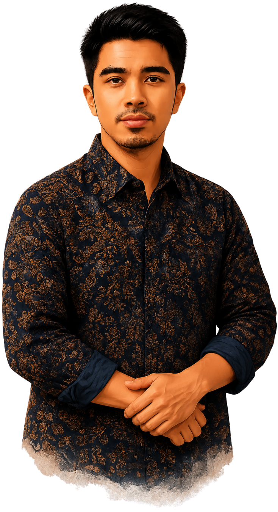

Saya memiliki pengalaman di bidang E-commerce Operations, Business Operations, Digital Marketing, Graphic Design, dan AI Productivity — dibangun dari perjalanan karier sebagai Information Technology Support Specialist, Graphic Designer, Entrepreneur, hingga E-commerce Operations Specialist.
Pengalaman tersebut membentuk kemampuan saya dalam mengelola operasional bisnis, manajemen marketplace, manajemen persediaan stok, administrasi keuangan, peningkatan proses bisnis, serta data analisis dan laporan untuk mendukung pertumbuhan bisnis secara menyeluruh.

Saya percaya bahwa setiap pekerjaan berawal dari memahami masalah secara mendalam. Dengan berpikir sistematis, saya menganalisis kebutuhan, mencari akar permasalahan, lalu merancang solusi yang tepat dan terukur.
Pendekatan saya selalu berfokus pada efisiensi dan hasil. Saya menyukai pekerjaan yang melibatkan proses, data, dan kreativitas karena kombinasi ini mampu menghasilkan strategi yang efektif, tampilan yang menarik, dan operasional yang lebih optimal.
Hal yang paling saya nikmati adalah melihat bisnis menjadi lebih terstruktur, brand lebih kuat, dan penjualan meningkat. Saya senang bekerja sama, belajar hal baru, dan memberikan nilai nyata bagi tim maupun klien.
Saya membawa nilai tanggung jawab, komunikasi yang jelas, dan komitmen terhadap kualitas di setiap pekerjaan yang saya kerjakan. Saya siap menjadi bagian dari tim yang solid untuk mencapai tujuan bersama.
Latar belakang pendidikan formal dan sertifikasi yang mendukung keahlian saya.
Kebersihan 5S adalah metode penataan tempat kerja asal Jepang—dikenal di Indonesia sebagai 5R (Ringkas, Rapi, Resik, Rawat, Rajin)—yang bertujuan menciptakan lingkungan kerja yang aman, nyaman, dan efisien melalui lima langkah terstruktur.
Saya terbuka untuk berbagai bentuk kerja yang fleksibel dan dapat disesuaikan dengan kebutuhan perusahaan atau klien.
Terbuka untuk posisi penuh waktu dengan komitmen jangka panjang.
Siap bekerja secara freelance untuk proyek jangka pendek maupun jangka panjang.
Nyaman dengan sistem kerja remote dengan komunikasi yang efektif.
Terbuka untuk sistem hybrid (office & remote) sesuai kebutuhan tim.
Menerima kerja berbasis proyek dengan fokus pada hasil dan tanggung waktu.
Nilai-nilai ini menjadi prinsip yang saya pegang dalam bekerja untuk membangun operasional yang efisien, memberikan hasil yang berkualitas, serta menciptakan dampak positif bagi tim dan bisnis.
Selalu belajar teknologi dan strategi baru untuk terus berkembang dan memberikan nilai terbaik.
Mengutamakan solusi yang cepat, efektif, dan efisien untuk mencapai hasil optimal.
Bekerja dengan tanggung jawab, kejujuran, dan transparansi dalam setiap proses dan keputusan.
Mencari cara baru dan kreatif untuk meningkatkan hasil dan memberikan solusi yang lebih baik.
Mencari akar masalah dari kesalahan yang pernah terjadi, lalu memperbaiki prosesnya supaya tidak terulang.
Saya tidak hanya menyelesaikan pekerjaan, tetapi berfokus pada kualitas, efisiensi, dan hasil yang memberikan nilai lebih bagi bisnis Anda.
Memperhatikan setiap detail kecil untuk memastikan hasil kerja akurat, rapi, dan berkualitas tinggi.
Cepat memahami hal baru dan beradaptasi dengan tools, sistem, serta kebutuhan bisnis yang terus berkembang.
Berfokus pada hasil yang terukur dan dampak nyata bagi pertumbuhan bisnis.
Mencari solusi praktis dan efektif setiap kali menghadapi tantangan dalam pekerjaan.
Mampu menganalisis data dan informasi untuk mendukung pengambilan keputusan yang tepat sasaran.
Terus mencari cara agar alur kerja lebih efisien, rapi, dan minim kesalahan.
Terbuka, komunikatif, dan bekerja sama dengan tim maupun klien dengan baik.
Bergerak lebih dulu tanpa menunggu diminta, kalau memang bisa membantu pekerjaan jadi lebih baik.
Bertanggung jawab penuh atas hasil kerja, mulai dari proses hingga penyelesaiannya.
Terus mengembangkan diri dan mengikuti perkembangan tools maupun cara kerja terbaru.
Di luar hasil kerja itu sendiri, ini kebiasaan dan hal-hal kecil yang saya nikmati saat menjalani pekerjaan sehari-hari.
Senang merancang alur kerja yang lebih efisien agar setiap proses berjalan cepat dan minim hambatan.
Selalu punya catatan kerja harian supaya tidak ada detail yang terlewat.
Senang mengevaluasi cara kerja dan mencari peluang agar proses menjadi lebih baik dan efisien.
Senang menyajikan data menjadi dashboard yang rapi agar progres kerja lebih mudah dipantau.
Senang mengeksplorasi tools dan teknologi AI terbaru untuk meningkatkan produktivitas kerja.
Sering bertanya, "Apakah ada cara yang lebih cepat atau sederhana?" lalu menggali sampai paham konsep dasarnya.
Terbiasa melakukan pengecekan ulang sebelum mengirim atau menyelesaikan pekerjaan agar meminimalkan kesalahan.
Senang menyusun sesuatu agar lebih rapi, terstruktur, mudah dipahami dan mudah dicari.
Lebih suka menyelesaikan pekerjaan berdasarkan tingkat urgensi dan dampaknya terhadap hasil kerja.
Paling puas kalau pekerjaan berulang bisa diringkas jadi rumus atau template otomatis.
Saya percaya bahwa terus belajar dan mengembangkan diri adalah kunci untuk memberikan kontribusi terbaik, baik dalam pekerjaan maupun kehidupan.
Jika pengalaman dan keahlian saya sesuai dengan kebutuhan Anda, mari mulai percakapan.
Unduh CV saya untuk informasi lebih lengkap tentang pengalaman dan keterampilan saya.
Unduh CV